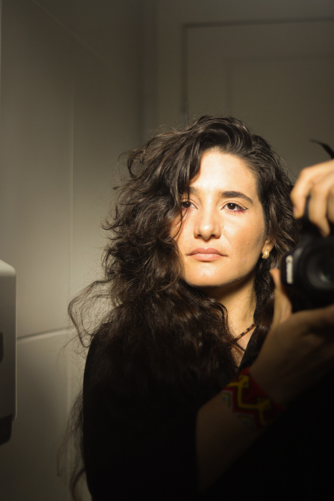

Fotografia de Parto & Família
Eternizando o milagre da vida
Capturando cada emoção com sensibilidade e respeito.
Capturando cada emoção com sensibilidade e respeito.

A minha jornada na fotografia de parto começou de um lugar de cura profunda. Após vivenciar um parto pessoal muito invasivo, senti o chamado de transformar essa dor em um serviço de proteção e acolhimento. Hoje, o Florescer nasce para oferecer um olhar sensível, respeitoso e profundamente humano.


Registro completo e respeitoso.
Som, respiração e emoção.